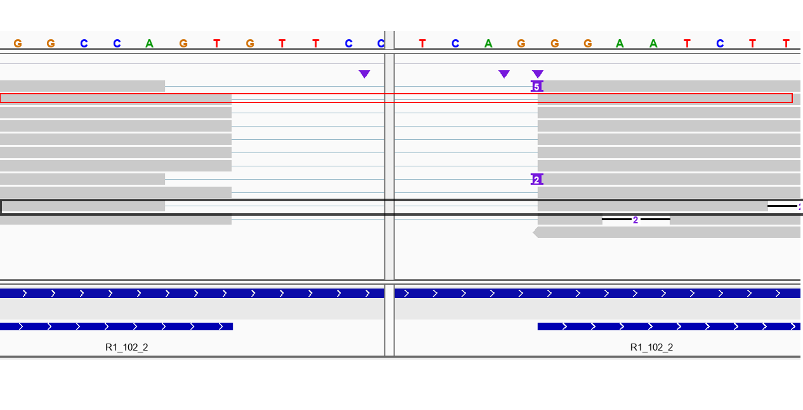

workflow
Yupei You
last updated: 14-May-2019 19:05
Last updated: 2019-05-14
Checks: 6 0
Knit directory: workflowr/
This reproducible R Markdown analysis was created with workflowr (version 1.3.0). The Checks tab describes the reproducibility checks that were applied when the results were created. The Past versions tab lists the development history.
Great! Since the R Markdown file has been committed to the Git repository, you know the exact version of the code that produced these results.
Great job! The global environment was empty. Objects defined in the global environment can affect the analysis in your R Markdown file in unknown ways. For reproduciblity it’s best to always run the code in an empty environment.
The command set.seed(20190306) was run prior to running the code in the R Markdown file. Setting a seed ensures that any results that rely on randomness, e.g. subsampling or permutations, are reproducible.
Great job! Recording the operating system, R version, and package versions is critical for reproducibility.
Nice! There were no cached chunks for this analysis, so you can be confident that you successfully produced the results during this run.
Great! You are using Git for version control. Tracking code development and connecting the code version to the results is critical for reproducibility. The version displayed above was the version of the Git repository at the time these results were generated.
Note that you need to be careful to ensure that all relevant files for the analysis have been committed to Git prior to generating the results (you can use wflow_publish or wflow_git_commit). workflowr only checks the R Markdown file, but you know if there are other scripts or data files that it depends on. Below is the status of the Git repository when the results were generated:
Ignored files:
Ignored: .Rhistory
Ignored: .Rproj.user/
Ignored: analysis/.Rhistory
Unstaged changes:
Modified: analysis/To_Do_List.Rmd
Note that any generated files, e.g. HTML, png, CSS, etc., are not included in this status report because it is ok for generated content to have uncommitted changes.
These are the previous versions of the R Markdown and HTML files. If you’ve configured a remote Git repository (see ?wflow_git_remote), click on the hyperlinks in the table below to view them.
| File | Version | Author | Date | Message |
|---|---|---|---|---|
| Rmd | ccf99fb | youyupei | 2019-05-14 | wflow_publish(“cDNA_workflow.Rmd”) |
| html | d2cbdfc | youyupei | 2019-05-13 | update |
| html | 7cf0f9d | youyupei | 2019-04-10 | Build site. |
| Rmd | ba88098 | youyupei | 2019-04-10 | wflow_publish("*Rmd") |
| html | 2ac121e | youyupei | 2019-04-08 | Build site. |
| html | 399a90a | youyupei | 2019-04-06 | Build site. |
| Rmd | 11a13c7 | youyupei | 2019-04-06 | wflow_publish(“./”) |
Data preprocessing
Data description
cDNA data
This is data shared by Mike and downloaded on 22 Mar 2019. The dataset contains raw data, fastq’s and sequencing summary files.
It a Nanopore cDNA dataset with Sequin controls:
It’s 4 technicals replicates of a differentiated SHSY5Y sample with Sequin spike-ins.
2 samples have spike-in mix A, two mix B, which means there should be DE of the spike-ins. These are the V2 spike-ins.
All libraries were made from a pool of polyA+ RNA. Starting from 1ug of total RNA each.
Used cDNA-PCR kit (PCS108) with LWB001 barcodes 7-10
Basecalling with Albacore 2.2.6. Pass is Q7
Barcodes are:
LWB07 GTGTTACCGTGGGAATGAATCCTT
LWB08 TTCAGGGAACAAACCAAGTTACGT
LWB09 AACTAGGCACAGCGAGTCTTGGTT
LWB10 AAGCGTTGAAACCTTTGTCCTCTC
Note1: the Primer sequence around the barcode is unclear.
Note2: The Nanopore base caller may not trims off adaptor and barcode sequencers, so they are likely still on each read.
Sequin Genome
Last update (30/3/2019)
The resource bundle contains the following reference files:
rnasequin_decoychr_2.2.fa.gz - decoy chromosome (chrIS) sequence the encodes all synthetic sequin gene loci (3Mb).
rnasequin_annotation_2.2.gtf - annotation of sequin genes/isoforms on the decoy chromosome (120kb).
rnasequin_genesmix_2.2.tsv - expected concentration (expression) of each sequin gene in mixture (2kb).
rnasequin_isoforms_2.3.tsv - expected concentration (expression) of each sequin isoform in mixture (5kb).
rnasequin_sequences_2.2.fa(downloaded on 30/3/2019) - sequences of all sequin isoforms (213kb).
NOTE | Users chould add the decoy chromsome to their reference genome assembly (e.g. hg38) prior to building an alignment index. Reads derived from sequins will then align to the decoy chromosome.
NOTE | These resource files are used by anaquin by default, and are located internally (within the resources directory that should be located with the anaquin binary under a common parent directory). However, we provide them here for users that wish to modify these files for bespoke analysis. Users can then manually provide their own custom modified annotations and over-ride the default resource files.
Reads Mapping
To decrease the running time, only reads form barcode 7 have been processed, which is about a quarter of the total number.
The reads were mapped to the transcript sequences: rnasequin_sequences_2.2.fa using minimap2( version 2.11-r797) and bam file sorting using samtools (version samtools 1.9 Using htslib 1.9 Copyright (C) 2018 Genome Research Ltd.) Command:
minimap2 -ax map-ont -t 8 $REF_PATH $READS_PATH | samtools sort -o
reads-ref.sorted.bam -T reads.tmp
samtools index reads-ref.sorted.bamMapping Quality Selection
The reference file I used is the collection of all isoforms from Sequins. To make sure the mapped reads come from the isoform they mapped to, I sellected the reads with highest Map qualities, which are 60 in the result from minimap2. The python script has been pushed to github
Expected Sequencing
this step turns out to be automatically done when using Tombo.
The basecalled suqences are subjuet to sequencing errors, but the actual sequences should be identical to the reference. I substituted the aligned range on each read with the corresponding sequence on reference. The start and end of each read are soft maskings, I kept it for a better alignment between the raw signal and basecalled read sequence. A .fasta file along with a python dictionary were created.
Structure
fasta:
> read ID
Expected seq
Dictionary:
Key: read ID
Value: Expected seqLocating the signal file.
The row data are organized by HDF5. The file name of each .fast5 file contains the channel ID and the # of read from that channel. However, it is not very straightforword to link each basecalled read with raw signal. Therefore, I built two dictionaries in python Source Code:
Structure: Key:
Read ID; Value: Fast5 file path There are two sequencing runs, so that two dictionaries are created
Squiggle alignment
Tombo resquiggle:
Function:
The re-squiggle algorithm defines a new assignment from squiggle to reference sequence, hence a re-squiggle.
Input:
FAST5 files (contaioning raw signal and associated base calls.)
Output:
The resquiggle command will add the mapped reference loacation and the raw seqeunce assignment to the .fast5 read files provided, as well as index file for more efficient file access.

# annotate raw FAST5s with FASTQ files produced from the same reads
# skip this step if raw read files already contain basecalls
tombo preprocess annotate_raw_with_fastqs --fast5-basedir <fast5s-base-directory> --fastq-filenames <reads.fastq>
tombo resquiggle <fast5s-base-directory> <reference-fasta> --processes 4 --num-most-common-errors 5Play with a single splicing site
I randomly selected a splicing site: R1_102_1 ref pos:6790296 transcript pos: 130
Mapping result
The reads were mapped to the reference genome in two different way about splicing sites:
To decrease the running time, only reads form barcode 7 have been processed, which is about a quarter of the total number.
The reads were mapped to the transcript sequences: rnasequin_sequences_2.2.fa using minimap2( version 2.11-r797) and bam file sorting using samtools (version samtools 1.9 Using htslib 1.9 Copyright (C) 2018 Genome Research Ltd.) Command:
- do not match GT-AG:
REF_PATH=/home/youyupei/PhD_proj/cDNA_dataset_Analyses/Sequin_resources/rnasequin_decoychr_2.2.fa
READS_PATH=/home/youyupei/PhD_proj/cDNA_dataset_Analyses/intermedia_data/Mapped_qlt58.sorted.fq
minimap2 -ax splice -t 8 $REF_PATH $READS_PATH | samtools sort -o mapped.un.splice.sorted.bam -T reads.tmp
samtools index mapped.un.splice.sorted.bamBAM file name: mapped.un.splice.sorted.bam 1
- match GT-AG (currently playing with):
cd /home/youyupei/PhD_proj/cDNA_dataset_Analyses/intermedia_data/BAM
REF_PATH=/home/youyupei/PhD_proj/cDNA_dataset_Analyses/Sequin_resources/rnasequin_decoychr_2.2.fa
READS_PATH=/home/youyupei/PhD_proj/cDNA_dataset_Analyses/intermedia_data/Mapped_qlt58.sorted.fq
minimap2 -ax splice -t 8 -uf $REF_PATH $READS_PATH | samtools sort -o mapped.un.splice.sorted.bam -T reads.tmp
samtools index mapped.un.splice.sorted.bamBAM file name: mapped.splice.sorted.bam

Exon junction Candidates
By looking at the mapping results, we proposed 2 potiential splicing site according to the supports from the mapped reads:
potential exon junction 1:
……GGCCAGGAAT ……
potential exon junction 2:
…… GGCCAGTGGAAT……
Queried read
After proposing the potential exon junction candidates, we query each read at a time. Currently, only one read, whose splicing site is consistent with annotated one, is queried: (Highlighted in the mapping figure)
Read name = 41bc625c-8ff9-400a-a32c-e647cb1ca97c Reference span = R1_102_1:1-1,490 (+)
Normalisation
I followed Tombo2 and normalise the squiggle using following method: \[ NormSignal = \frac{RawSignal-Shift}{Scale}\]
Raw read visualisation:
The script for ploting the squiggle is Python/visulisation/plot_squiggle.py:
Usage:
python plot_squiggle.py <fast5 filename> <save fig as> <optianl: start> <optional: end>The sequence near the queried exon junction:
…..CCTCCGGCCAGT||GGAATCTTG….. (|| is the true exon boundary.)
Locate the queried exon junction
By running tombo resquiggle we can the the index of data points than belong to the junction region:
For all the spike-in reads with barcode 7, we ran the following code:
FAST5_DIR=/data/cephfs/punim0614/yupei/dataset/cDNA/test_subset_seq_run_1213_barcode_7/fast5s
FASTQ_PATH=/data/cephfs/punim0614/yupei/dataset/cDNA/test_subset_seq_run_1213_barcode_7/test_fastq.fq
REF=/home/youyupei/PhD_proj/cDNA_dataset_Analyses/Sequin_resources/rnasequin_sequences_2.2.fa
# annotate raw FAST5s with FASTQ files produced from the same reads
# skip this step if raw read files already contain basecalls
tombo preprocess annotate_raw_with_fastqs --fast5-basedir $FAST5_DIR --fastq-filenames $FASTQ_PATH
tombo resquiggle $FAST5_DIR $REF --processes 8 --num-most-common-errors 5Now the information in .fq file will be stored into the .fast5 file. However, it tricky to find the corresponding .fast5 file by look into the file and match the read id. I have generated two file (test_fast5_file.txt, test_readid.txt) in /data/cephfs/punim0614/yupei/dataset/cDNA/test_subset_seq_run_1213_barcode_7. These two file list the fast5_filename and readid in the same order. We can get the fast5 filename from the read id using following command:
file_dir=/data/cephfs/punim0614/yupei/dataset/cDNA/test_subset_seq_run_1213_barcode_7
# looking for read 41bc625c-8ff9-400a-a32c-e647cb1ca97c
line=$(sed -n '/41bc625c-8ff9-400a-a32c-e647cb1ca97c/=' test_readid.txt)
head -n $line test_fast5_file.txt | tail -n 1The alignment results were written in the .fast5 file. The following figure shows the information of squiggle assigned to the exon boundary:
Tombo resquiggle result of the exon boundary, read start point: 2108
Note: The alignment of squiggle to the reference doesn’t start from the first data point, for example, here, 2108 points were skipped since they may come from the flanking region of the delay when sequencing begin.
Then we could plot the No.3792(1684+2108) to No.3909(1801+2108) data points which are assigned to the 8 bases of exon boundary (CAGTGGAA) by Tombo:
cd /home/youyupei/PhD_proj/cDNA_dataset_Analyses/tiny_set/quried_read/queried_read_true
python /home/youyupei/PhD_proj/Python/visulisation/plot_squiggle.py DESKTOP_4SQHSSK_20180117_FAH31144_MN18871_sequencing_run_SHSY5Y_cDNA_bcode_test_35833_read_48338_ch_43_strand.fast5 exon_junc.png 3792 3909exon_junc.png
Generate representative squiggle
scrappie squiggle
scrappie squiggle offers model that can take genomic seq as input and output a squiggle model.
cat motif.fa
>motif1
CCTCCGGCCAGGAATCTTGG
>motif2
CCTCCGGCCAGTGGAATCTTGG
scrappie squiggle motif.fa
#motif1
pos base current sd dwell
0 C 0.079393 0.246576 1.260316
1 C 0.173283 0.279191 1.997539
2 T 1.675771 0.265075 5.029190
3 C 0.782815 0.115154 8.015615
4 C 0.322376 0.117889 6.181633
5 G -0.939446 0.140061 7.694880
6 G -0.624462 0.149050 7.269218
7 C 0.834250 0.127715 7.511081
8 C 0.507823 0.101567 8.413451
9 A -0.185710 0.130177 8.313931
10 G -0.794095 0.113302 8.961154
11 G -1.342859 0.140990 8.430869
12 A -1.672500 0.131926 8.973479
13 A -1.104969 0.193693 8.682899
14 T 1.865047 0.294928 10.313233
15 C -0.272842 0.169230 8.563330
16 T 0.694751 0.148489 6.617270
17 T 0.808682 0.181729 8.346174
18 G -0.865237 0.365732 12.009984
19 G -0.199032 0.567114 10.152534
#motif2
pos base current sd dwell
0 C 0.101065 0.239271 1.504468
1 C 0.176557 0.290187 1.791338
2 T 1.677020 0.259444 5.615876
3 C 0.788714 0.126458 7.922444
4 C 0.308722 0.115572 7.711353
5 G -0.954900 0.136572 8.255605
6 G -0.590207 0.153253 5.455171
7 C 0.930568 0.126736 7.415801
8 C 0.521894 0.126124 7.854805
9 A -0.799399 0.135139 7.927912
10 G -1.409017 0.140081 9.589546
11 T 1.111312 0.198856 9.070815
12 G -0.209650 0.158067 8.972621
13 G -1.273490 0.143306 8.812642
14 A -1.772102 0.138298 9.380451
15 A -1.175741 0.191701 8.371544
16 T 1.872593 0.304727 9.712858
17 C -0.266769 0.175313 8.087045
18 T 0.727317 0.156353 6.242123
19 T 0.814729 0.189654 7.836185
20 G -0.870297 0.362229 11.444877
21 G -0.204841 0.559124 10.015700
I emailed for the algorithm to the developer of scrappie and here is the reply:
The basic architecture is stacked convolutional network, implemented in squiggle_r94 (https://github.com/nanoporetech/scrappie/blob/master/src/networks.c#L397):
All convolution window lengths are 9 and have a tanh activation
Embed the sequence into a 3 x sequence_length matrix, the coordinate of each base defined by the points of a tetrahedron.
Convolution 3 ->32
Repeated four times:
Residual wrapper x + f(x) around
Convolution 32 -> 32
Convolution 32 -> 3
After transforming, the three outputs for each sequence position can be interpreted as the expected current level, variance and dwell of the samples matching that position. The network can be trained by Taiyaki, using a custom loss function that calculates the probability of each signal given its predicted squiggle.
Hope this helps.
Problems: We are worrying about that the signal may change across different sequencing run, the data for training used by scrappie group may differ from ours. But this method is still worth to be tried, because the results will be good if the signal level distributions from different sequecing run are consistent after nomalisation.
Advantages:
- The steps are simpler
- Expected squiggle of motifs with whatever length can be generated quickly
representative squiggle from spike-in
Count motif
Figure: Illustration of motif counting
For cDNA data, we could count signal from either forward strand or reverse strand. That means for a queried motif, we can also look for it’s reverse compliment.
Compared with the scrappie approach:
- Pros:
- Spikin reads are fro the same sequencing run of the other reads, which overcomes the limitation of the scrappie approach
- Cons:
- After finding the occurance of queried motifs, we need to extract corresponding signal data. We did it using tombo resquiggle. However this step may have same problem because tombo resquiggle also relies on the pre-trained pore model.
- We are not sure the tombo resquiggle result is accurate, because there is no way to test the correctness of the squiggle-to-base assignment. This step may also introduce some uncertainty.
- The length of the queried motifs are limited to a gread extent, since we can hardly find occurances in spikein transcripts when querying motif longer than 10. This will affect the results a lot because the signal assigned to the start and end bases are depend on the based coming before or after the queried motif.
- This method is much more tedious than the scrappie squiggle method.
DTW using based on scrappie model
Do this by using SquiggleKit MotifSeq.py3:
Input: scrappie model signal.tsv
output: best local match of the motif model in the singal
Transform data to suit the SquiggleKit input
SquiggleKit require the signal data to be presented as .tsv file with following format:
GXB01170_20180329_FAH60584_GA50000_sequencing_run_LLAAB035083_26949_read_15463_ch_199_strand.fast5 12611 all 589 564 554 566 540 548 570 566 596 660 683 588 601 629 639 610 607 594 599 543 573 596 593 624 613 614 637 606 618 617 548 537 564 549 565 556 514 541 537 535 559 528 573 555 546 627 552 547 558 569 553 577 621 615 627 600 607 586 562 435 439 457 448 462 462 494 581 577 536 557 529 571 597 555 540 550 520 552 541 526 531 545 536 592 614 614 605 597 610 594 599 612 615 597 586 592 583 592 582 588 588 579 604 579 596 595 600 594 590 589 584 582 584 573 582 577 605 639 641 653 651 762 817 807 824 842 842 805 826 827 815 810 808 819 816 809 818 823 793 778 787 801 781 801 806 822 823 802 807 808 801 794 818 775 761 745 734 714 721 704 686 693 671 649 630 628 645 686 677 701 634 617 617 545 562 548 553 553 552 I selected the region in the previous table: tombo output
The raw data start from 3694(1586+2108) to 3945(1817+20+2108):
cd /home/youyupei/PhD_proj/cDNA_dataset_Analyses/tiny_set/quried_read
SCRIPT_PATH=/home/youyupei/PhD_proj/Python/
fast5_file=/home/youyupei/PhD_proj/cDNA_dataset_Analyses/tiny_set/quried_read/queried_read_false/fast5s/DESKTOP_4SQHSSK_20180117_FAH31144_MN18871_sequencing_run_SHSY5Y_cDNA_bcode_test_35833_read_48338_ch_43_strand.fast5
python $SCRIPT_PATH/fast5_to_tsv.py $fast5_file boundary_signal.tsv 3694 3945Before applying the DTW, I plotted out the expected signal as well as the observed signal:
cd /opt/shared/PhD_project/Nanopore-Splicing-Site/example
python3 ../visulisation/plot_scrappie_model.py motif_true.model model_plot
python /visulisation/plot_squiggle.py DESKTOP_4SQHSSK_20180117_FAH31144_MN18871_sequencing_run_SHSY5Y_cDNA_bcode_test_35833_read_48338_ch_43_strand.fast5 exon_junc_20_bases.png 3694 3945


DTW using SquiggleKit: MotifSeq.py
In SquiggleKit, DTW is applied using [mlpy.dtw_subsequence](http://mlpy.sourceforge.net/docs/3.5/dtw.html#subsequence-dtw) in mlpy package：
mlpy.dtw_subsequence:
- It’s a local alignment
- Use Manhattan distance
MotifSeq.py:
- Input: .tsv file, signal start from the 4th element in each row
- dtw_subsequence in MotifSeq.py compares the raw signal with the scrappie model (Doesn’t use the variance).
Input of MotifSeq.py is saved in Nanopore-Splicing-Site/example:
Bash command (ran locally):
cd /opt/shared/PhD_project/Nanopore-Splicing-Site/example
echo "false model:"
python $shared/SquiggleKit/MotifSeq.py -s boundary_signal.tsv -m motif_false.model
echo "true model:"
python $shared/SquiggleKit/MotifSeq.py -s boundary_signal.tsv -m motif_true.model
Here is the result
false model:
/home/youyupei/PhD_proj/cDNA_dataset_Analyses/tiny_set/quried_read/queried_read_false/fast5s/DESKTOP_4SQHSSK_20180117_FAH31144_MN18871_sequencing_run_SHSY5Y_cDNA_bcode_test_35833_read_48338_ch_43_strand.fast5 Dist: 48.871340492238865 pos: 50 , 166 Dist from Start 50 Length: 116
true model:
/home/youyupei/PhD_proj/cDNA_dataset_Analyses/tiny_set/quried_read/queried_read_false/fast5s/DESKTOP_4SQHSSK_20180117_FAH31144_MN18871_sequencing_run_SHSY5Y_cDNA_bcode_test_35833_read_48338_ch_43_strand.fast5 Dist: 58.51271588303034 pos: 33 , 233 Dist from Start 33 Length: 200
sessionInfo()R version 3.6.0 (2019-04-26)
Platform: x86_64-w64-mingw32/x64 (64-bit)
Running under: Windows 10 x64 (build 17763)
Matrix products: default
locale:
[1] LC_COLLATE=English_United States.1252
[2] LC_CTYPE=English_United States.1252
[3] LC_MONETARY=English_United States.1252
[4] LC_NUMERIC=C
[5] LC_TIME=English_United States.1252
attached base packages:
[1] stats graphics grDevices utils datasets methods base
loaded via a namespace (and not attached):
[1] workflowr_1.3.0 Rcpp_1.0.1 digest_0.6.18 rprojroot_1.3-2
[5] backports_1.1.4 git2r_0.25.2 magrittr_1.5 evaluate_0.13
[9] stringi_1.4.3 fs_1.3.0 whisker_0.3-2 rmarkdown_1.12
[13] tools_3.6.0 stringr_1.4.0 glue_1.3.1 xfun_0.6
[17] yaml_2.2.0 compiler_3.6.0 htmltools_0.3.6 knitr_1.22 BAM file path: /home/youyupei/PhD_proj/cDNA_dataset_Analyses/intermedia_data/BAM↩
https://nanoporetech.github.io/tombo/resquiggle.html#signal-normalization↩